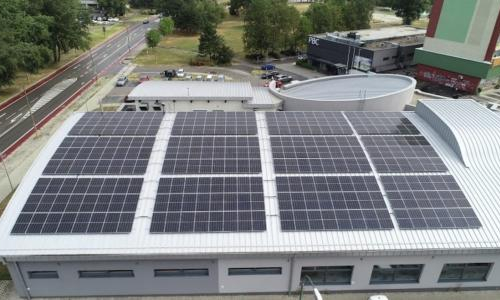
Fotovoltická elektráreň
Fotovoltická elektráreň je nainštalovaná na streche Petržalskej plavárne s technológiou...
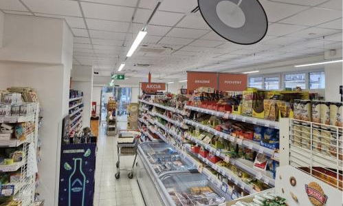
Predajňa COOP Jednota
Realizácia výmeny osvetlenia na predajni PJ 519 Beckov. V rámci rekonštrukcie a modernizácie predajne sme nainštalovali...
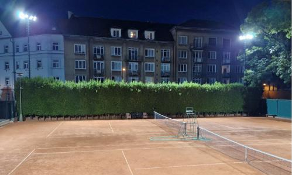
Tenisový klub lokomotíva Bratislava
Realizácia výmeny osvetlenia výrobných hál a skladových priestorov. Osvetľovacia sústava pozostáva z...
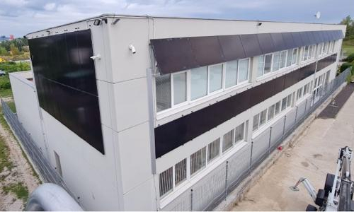
Fotovoltická elektráreň
Fotovoltická elektráreň je nainštalovaná na fasáde skladovo-obchodného objektu s technológiou...
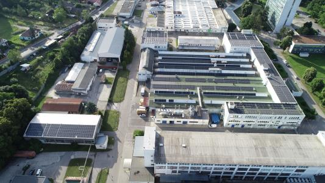
Fotovoltická elektráreň
Fotovoltická elektráreň je nainštalovaná na strechách priemyselného objektu s technológiou...
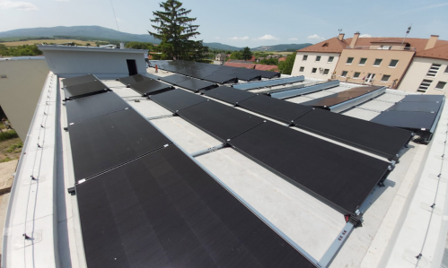
Fotovoltická elektráreň
Fotovoltická elektráreň je nainštalovaná na streche maloobchodnej predajne potravín s technológiou...
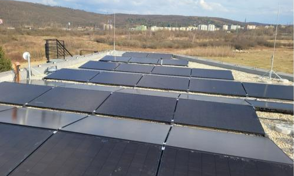
Fotovoltická elektráreň
Fotovoltická elektráreň je nainštalovaná na streche polyfukčného objektu s technológiou...
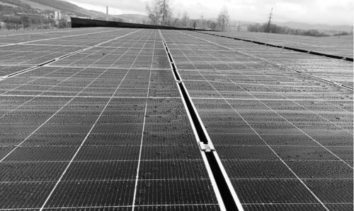
Fotovoltická elektráreň
Fotovoltická elektráreň s nominálnym výkonom 121,38 kWp je nainštalovaná...
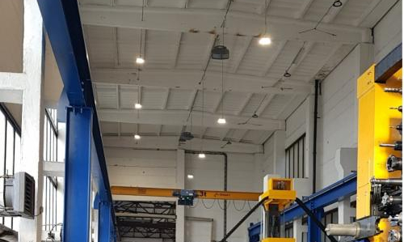
Výrobné haly Essel
Realizácia výmeny osvetlenia vo výrobnej hale. V rámci úspory nákladov a zvýšenia intenzity osvetlenia bola zrealizovná...
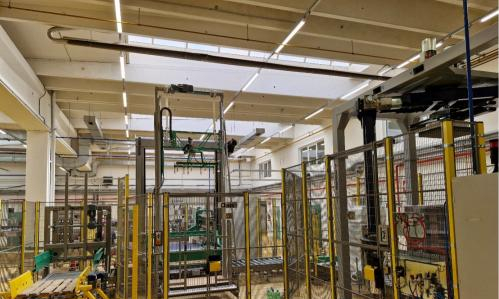
Výrobné haly a sklady Trenčianske minerálne vody
Realizácia výmeny osvetlenia výrobných hál a skladových priestorov. Osvetľovacia sústava pozostáva z...
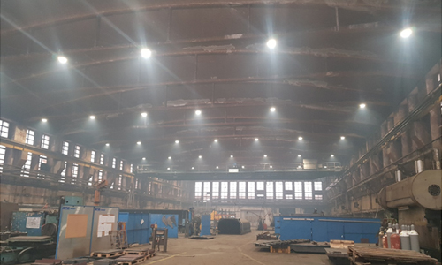
Strojárne Detva
Realizácia výmeny osvetlenia vo výrobnej hale. V rámci úspory nákladov a zvýšenia intenity osvetlenia bola zrealizovná výmena osvetlovacej sústavy a elektrických rozvodov.

Výmena osvetlenia v učebniach Obchodnej akadémie v Bratislave II. etapa
Výmena pôvodného žiarivkového osvetlenia za úsporné LED svietidlá. Pôvodné osvetlenie nespĺňalo min. úroveň intenzity podľa STN EN 60 598,STN EN 12 464-1 a vyhlášky Ministerstva zdravotníctva SR č. 541/2007 Z. z. a jeho prevádzka bola neefektívna.
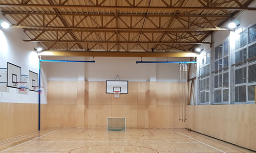
Telocvičňa, OA Bratislava
Realizácia nového osvetlenia tréningového futbalového ihriska. Osvetlovacia sústava pozostáva zo svietidiel s vysokou účinnosťou (150lm/W) a špeciálnu optikou pre dosiahnutie nízkeho oslnenia.
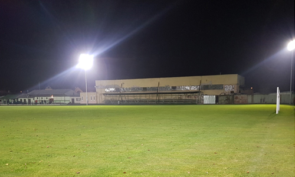
Tréningové futbalové ihrisko, Bratislava Jarovce
Realizácia nového osvetlenia tréningového futbalového ihriska. Osvetlovacia sústava pozostáva zo svietidiel s vysokou účinnosťou (150lm/W)...
 doplnená bodovými svietidlami s vysokým CRI pre dosvietenie čerstvého tovaru.")
Predajňa potravín KRAJ, Hraničná Bratislava
Realizácia nového osvetlenia pre novootvorenú prevádzku supermarketu. Osvetlovacia sústava pozostáva z lineárnych svietidiel s vysokou účinnosťou (160lm/W) doplnená bodovými svietidlami s vysokým CRI pre dosvietenie čerstvého tovaru.

Výmena osvetlenia v učebniach Obchodnej akadémie v Bratislave
Výmena pôvodného žiarivkového osvetlenia za úsporné LED svietidlá. Pôvodné osvetlenie nespĺňalo min. úroveň intenzity podľa STN EN 60 598,STN EN 12 464-1 a vyhlášky Ministerstva zdravotníctva SR č. 541/2007 Z. z. a jeho prevádzka bola neefektívna.

Výmena verejného osvetlenia Krupina
Výmena pôvodného osvetlenia ktorého prevádzka bola neefektívna. Svietidlá so sodíkovými výbojkami 250W boli vymenené za úsporné LED svietidlá 80W. Rýchla návratnosť bola dosiahnutá vďaka použitiu svietidiel s účinnosťou až 150lm/W.
 doplnené bodovými svietidlami s vysokým CRI pre dosvietenie čerstvého tovaru.")
Predajňa potravín SM TERNO Detva
Realizácia výmeny osvetlenia pre predajňu SM TERNO.Pôvodné žiarivkové osvetlenie bolo neefektívne a navyše intenzita osvetlenia bola nevyhovujúca. Nové osvetlenie pozostáva z lineárnych svietidiel s vysokou účinnosťou (140lm/W) doplnené bodovými svietidlami s vysokým CRI pre dosvietenie čerstvého tovaru.
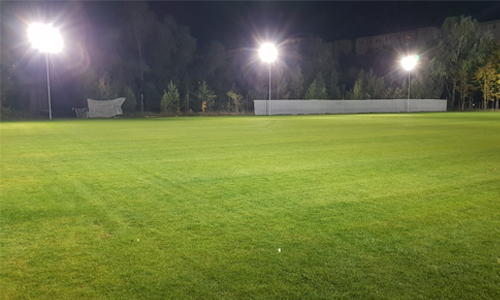
Tréningové futbalové ihrisko, FK Lamač Bratislava
Realizácia nového osvetlenia tréningového futbalového ihriska. Osvetlovacia sústava pozostáva z LED reflektorov s vysokou účinnosťou (150lm/W) a špeciálnou optikou pre dosiahnutie nízkeho oslnenia.

Predajňa potravín SM COOP Jednota Krupina SD
Realizácia výmeny osvetlenia na predajni SM Tempo PJ522 Zvolen. V rámci rekonštrukcie a modernizácie predajne sme nainštalovali nové lineárne osvetlenie, ktoré je doplnené dizajnovými bodovými svietidlami s vysokým CRI pre dosvietenie čerstvého tovaru.

Predajňa potravín SM COOP Jednota Krupina SD
Realizácia výmeny osvetlenia na predajni SM Tempo Zvolen-Záhonok. V rámci rekonštrukcie a modernizácie predajne sme nainštalovali nové lineárne osvetlenie, ktoré je doplnené dizajnovými bodovými svietidlami s vysokým CRI pre dosvietenie čerstvého tovaru.
. Použité svietidlámajú CRI>95čo zvýrazňuje kvalitu čerstvého tovaru.")
Potraviny nie otraviny Nitra
Realizácia moderného osvetlenia typu tracklightpre predajňu Potraviny nie otraviny.Systém vodiacich koľajníc umožňuje variabilne posúvať a fixovať rôzne typy svietidiel ( lineárne, bodové, závesné núdzové ). Použité svietidlámajú CRI>95čo zvýrazňuje kvalitu čerstvého tovaru.
 doplnená bodovými svietidlami s vysokým CRI pre nasvietenie čerstvého tovaru.")
Supermarket KRAJ, Most pri Bratislave
Realizácia nového osvetlenia pre novootvorenú prevádzku supermarketu. Osvetlovacia sústava pozostáva z lineárnych svietidiel s vysokou účinnosťou (160lm/W) doplnená bodovými svietidlami s vysokým CRI pre nasvietenie čerstvého tovaru.
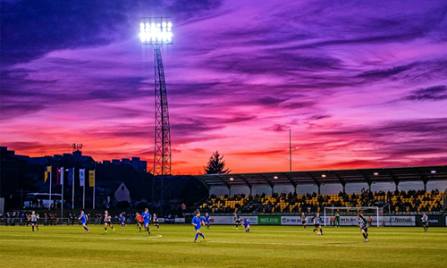
Osvetlenie futbalového ihriska, Žiar nad Hronom
Výmena pôvodného osvetlenia s MHID žiarivkami za úsporné LED reflektory. Pôvodné osvetlenie nespĺňalo min. úroveň intenzity podľa štandardu UEFA a navyše bola jeho prevádzka neefektívna.
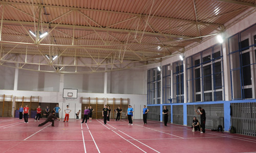
Športová hala, ZŠ Bratislava
Kompletná rekonštrukcia elektroinštalácie včítane výmeny osvetlenia pre športové haly. Pôvodné osvetlenie nespĺňalo min. úroveň intenzity podľa STN a navyše bola jeho prevádzka neefektívna...
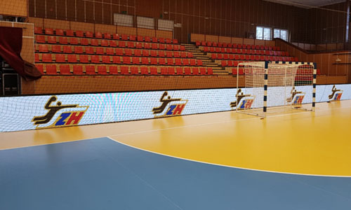
LED mantinely pre Národné športové centrum
Dodávka reklamných LED mantinelov a scoreboardu včítane riadiaceho systému s možnosťou naprogramovania statických piktogramov alebo...
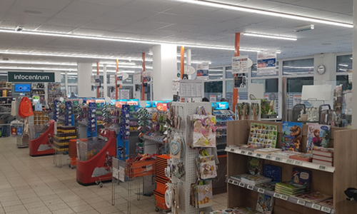
Sieť predajní COOP Jednota Prievidza SD
Realizácia výmeny osvetlenia na maloobchodných predajniach reťazca za účelom zvýšenia intenzity a kvality osvetlenia a súčasne zníženia nákladov na prevádzku zastaraného pôvodného osvetlenia.
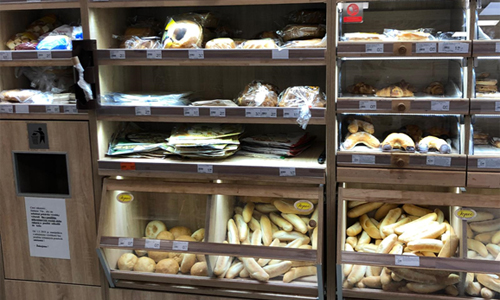
Sieť predajní COOP Jednota Nitra SD
Realizácia výmeny osvetlenia na maloobchodných predajniach reťazca za účelom zvýšenia intenzity a kvality osvetlenia a súčasne zníženia nákladov na prevádzku zastaraného pôvodného osvetlenia.
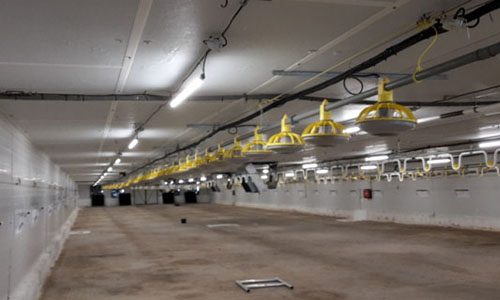
Hydinové farmy, BRANKO Slovakia, Nitra
Výmena elektroinštalácie včítane výmeny osvetlenia pre hydinové farmy. Nové LED osvetlenie je automaticky riadené programovateľným stmievačom podľa časového plánu ...
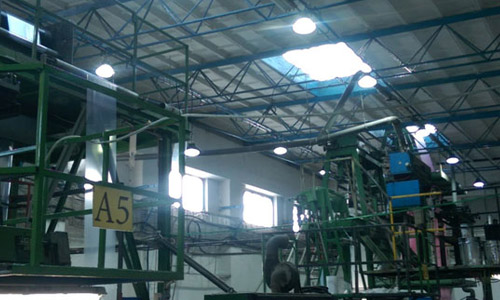
Výrobná hala, PRIMAPLAST, Bernolákovo
Kompletná rekonštrukcia elektroinštalácie včítane výmeny osvetlenia pre výrobnú halu.Pôvodné osvetlenie nespĺňalo min. úroveň intenzity podľa STN a navyše bola jeho prevádzka neefektívna...
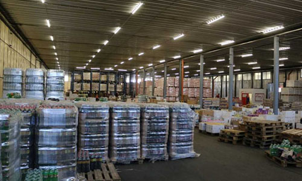
Distribučný sklad CBA Slovakia, Chynorany
Kompletná rekonštrukcia elektroinštalácie včítane výmeny osvetlenia pre distribučný sklad tovaru.Pôvodné osvetlenie nespĺňalo min. úroveň intenzity podľa STN a navyše bola jeho prevádzka neefektívna...
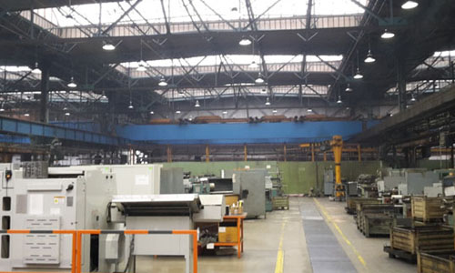
Výrobné haly, WAY INDUSTRIES, Krupina
Kompletná rekonštrukcia elektroinštalácie včítane výmeny osvetlenia pre výrobné haly. Pôvodné osvetlenie nespĺňalo min. úroveň intenzity podľa STN a navyše bola jeho prevádzka neefektívna...
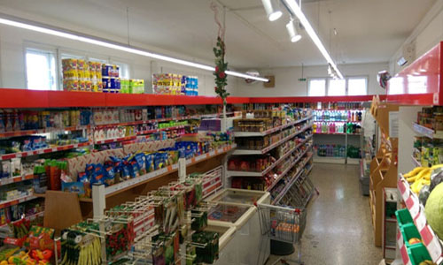
Predajne COOP Jednota Trenčín SD
Realizácia výmeny osvetlenia na maloobchodných predajniach reťazca za účelom zvýšenia intenzity a kvality osvetlenia a súčasne zníženia nákladov na prevádzku zastaraného pôvodného osvetlenia...
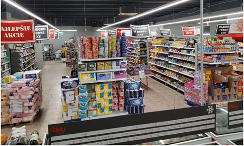
Predajňa potravín CBA Slovakia
Realizácia nového osvetlenia pre novootvorenú prevádzku supermarketu. Osvetlovacia sústava pozostáva z lineárnych svietidiel s asymetrickým osvetlením doplnenými bodovými svietidlami...
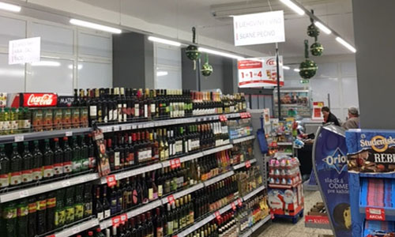
Predajne potravín CBA Slovakia
Realizácia výmeny osvetlenia na maloobchodných predajniach reťazca za účelom zvýšenia intenzity a kvality osvetlenia a súčasne zníženia nákladov na prevádzku zastaraného pôvodného osvetlenia...
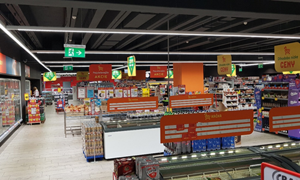
Supermarket CBA – OD PRIOR Lučenec
Realizácia nového osvetlenia pre novootvorenú prevádzku supermarketu. Osvetľovacia sústava pozostáva z lineárnych svietidiel s asymetrickým osvetlením doplnenými bodovými svietidlami...
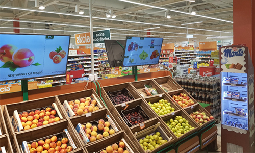
Supermarket COOP Jednota TEMPO, OD MAX Trenčín
Realizácia nového osvetlenia včítane kompletnej elektroinštalácie pre novootvorenú prevádzku supermarketu. Osvetlovacia sústava pozostáva z lineárnych svietidiel...
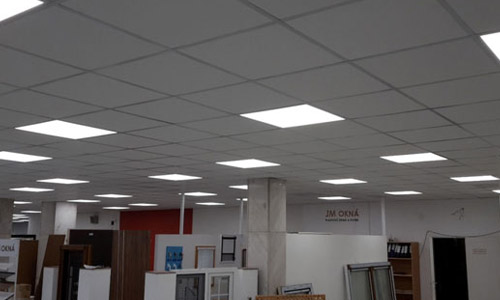
Obchodný dom COOP Jednota, Handlová
Realizácie rekonštrukcie stropu a výmeny osvetlenia v obchodnom dome. Montáž zníženého kazetového stropu včítane inštalácie nových LED svietidiel s výraznou úsporou nákladov...